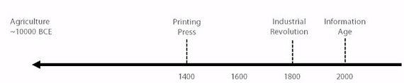
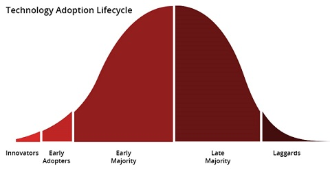
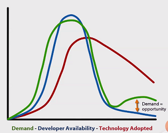
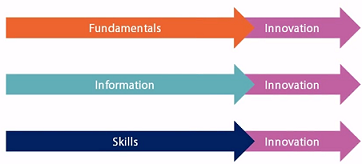
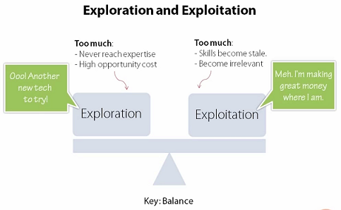

Technology to Learn Next¶
Nowadays, we are in a rapid changing world, and the velocity of the change is increasing. Especially in some young industries like Information technology, new opportunities and exciting news keep popping-up everyday. If you are in IT industry like the me (Binwei, the author), you are lucky. And it is simply too many technologies for you to learn, this blog will discuss the topic: what to learn next.
Contents
Dark side¶
However, there is a dark side of everything in the world, no exception in IT industry.
Obsolescence¶
Let’s do some simple comparisons of the front-end technology:
- 2000: Flash, ASP, Java Applets
- 2017: Node.JS, Ruby on Rails, Angular.JS
If you are unfortunately pick one of the technology in the first row, what you learned may be not relevant at all after one decade.
Then you have to learn new stuff in order to catch-up the state-of-art technology.
Threats¶
The IT industry keeps automating a lot of work by “machine”. At the same time, a lot of programming work is also simplified a lot and automated by “machine”. New frameworks, new tools, new infrastructure and new methodology automates programming work and make it easier to programme too.
The entry level in programming becomes lower and lower. Maybe programming will be a skill everyone can have. Think about writing and mathematics 100 years ago, if people had the skills they could depend on them whole life.
Change, change, change¶
The amount of available knowledge is growing rapidly, the pace of change keeps increasing
There are always new tools, new platforms, new languages, new platforms.
Then let’s come back to the original topic, if how you pick up the next book or video to learn new technology, what will be your choice?
- Urgent Needs!
- Good for my next job
- It’s just cool technology
- Might help me a decade from now?
I promise you will get the answer very soon. :)
Technology Adoption Lifecycle¶
First it is simply impossible that you can catch-up all the state-of-art technologies. And there is nothing wrong you decide to wait or skip parts of them.
Every technology has its adoption life cycle.
You can choose your strategy whether/when to learn a specific technology, and each phase has its pros and cons.
- If you position yourself on the edge, once there is position you will have strong opportunity to get that with good pay. However the chance may be limited
- If everybody is learning something popular, it will have the risk of superfluous supply even though the demand may be high.
- Late entrance may be also good, that you know the techniques are good and not just cool. And the you can get a lot of mature materials and robust infrastructure.
From the finance perspective: the “price” of the technology depends on the both demand and supply.
If the demand is higher than supply, then it is big opportunity. On the opposite, if the demand is lower than the supply, then it is a threat.
Then to spend our time on high demand/low supply will be an obvious choice.
What we can do is to keep an eye on overall job market and know the trend:
- Job seeking websites: monster, stackoverflow jobs, dice
- Technology statistics: TIOBE Index, Bereau of Labor Statistics
- Technology trend: Tech Radar
To know the data/trend is important for you to decide the right direction to go.
Build Your Own Foundation¶
The hot skills are changing continuously,
- You can’t know everything
- You can’t keep up with what’s new
You need to predict potential important skills for next decade, refresh yourself continuously, do not invest all in one skill in order to lower the risks.
You have to build your own foundation:
Learn¶
- Learn how to learn
- Learn what not to learn and where to stop
- Learn the fundamentals
- Learning on demand
Don’t¶
- Don’t believe marketing hype
- Don’t always follow the money (but always know where it is)
- Don’t let your specialization become your identity
Breadth vs Depth¶
- Breadth: build a foundation in multiple subject area
- Depth: briefly specialize in targeted subjects as needed
You have your own interests area, your specific personality and your own family situation. The above items vary from people to people, you need to think through them thoroughly and have your own foundation/principle to learn new technology.
When you build your own foundation, then it can help you to drive the process to move forward on learning the new technology and keep updated.
Learning Tracks¶
If you want to learn new technology, which can be fell into following tracks:
- Build fundamental knowledge on some areas
- Get information
- Build skills
- Become expert
Fundamentals¶
- Is widely applicable which is not bound to one particular implementation
- Rarely becomes obsolete: fundamental knowledge can last a lifetime
- Can helps you to learn and process information
Ensure you spare enough time to build-up solid fundamental knowledge, which will be a very good investment!
Information¶
- Specific knowledge you use to solve problems
- When working on an existing project, people mainly will focus on Information part rather than Fundamental part
- May be bind to a specific tools/technology, are easier to ‘fall behind’.
Be careful to spend too much energy to purely to build-up information knowledge, after several years they may be outdated.
Skills¶
- The ability to use knowledge to solve problems
- This part is where you get paid. People rarely pay what you know, they pay what you can do (information vs skills)
Practice is essential to build-up skills. Fundamentals and Information are important ingredients to build-up skills too.
Expertise & Innovation¶
Experts have access to the fundamental knowledge, information and skills that are required to do so.
To become competent: study, search for solutions, practice skills
To become an expert/innovator: Experimentation, research, perseverance
Please be aware that expertise can help you get more work as consultant, speaker or author, but is rarely the most effective way to increase income.
One of the reason to choose this track is the innovation track itself can also be a lot of fun.
At the meantime, it is also important to keep the balance to become expert in one area vs have wide knowledge.
Hotspots?¶
What will be the next technology hotspots? If you catch-up the hotspots, there will be plenty opportunities for you, high salary, good position, many choices. At the meantime, it is also important you do have interests in that specific technology area.
Remember: if you are having fun, the money is a bonus!
The following areas may have good opportunities to become the next hotspots.
- Security & cryptography: there will be more cyberattack, security path can be hot.
- 3D printing: can change the model of massive production and emphasize the customization and produce on demand.
- Virtual reality & mixed reality & augmented reality
- High performance computation: multiple thread/process, functional programming, distributed computation
- The internet of things & Big data
- Pattern recognition
- Artificial intelligence & Robotics
Be careful to spend too much energy on all kinds of latest front-end web/mobile/desktop technology. I will assume there will be no difference on programming side between mobile and desktop in the long term. Believe it or not?
Written by Binwei@Oslo